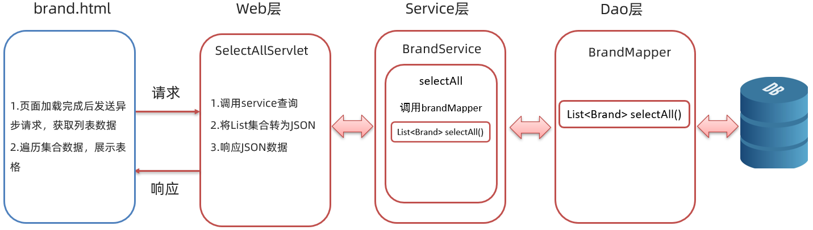
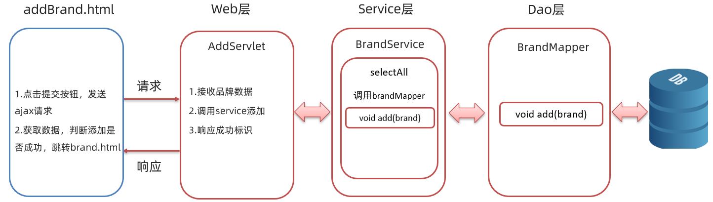
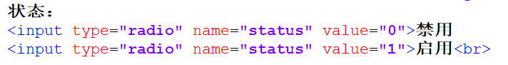

1. Filter
1.1 Filter概述
Filter 表示过滤器，是 JavaWeb 三大组件(Servlet、Filter、Listener)之一。Servlet 我们之前都已经学习过了，Filter和Listener 我们今天都会进行学习。
过滤器可以把对资源的请求==拦截==下来，从而实现一些特殊的功能。
如下图所示，浏览器可以访问服务器上的所有的资源（servlet、jsp、html等）

而在访问到这些资源之前可以使过滤器拦截来下，也就是说在访问资源之前会先经过 Filter，如下图

拦截器拦截到后可以做什么功能呢？
==过滤器一般完成一些通用的操作。==比如每个资源都要写一些代码完成某个功能，我们总不能在每个资源中写这样的代码吧，而此时我们可以将这些代码写在过滤器中，因为请求每一个资源都要经过过滤器。
我们之前做的品牌数据管理的案例中就已经做了登陆的功能，而如果我们不登录能不能访问到数据呢？我们可以在浏览器直接访问首页 ，可以看到 查询所有 的超链接

当我点击该按钮，居然可以看到品牌的数据

这显然和我们的要求不符。我们希望实现的效果是用户如果登陆过了就跳转到品牌数据展示的页面；如果没有登陆就跳转到登陆页面让用户进行登陆，要实现这个效果需要在每一个资源中都写上这段逻辑，而像这种通用的操作，我们就可以放在过滤器中进行实现。这个就是==权限控制==，以后我们还会进行细粒度权限控制。过滤器还可以做 统一编码处理、 敏感字符处理 等等…
1.2 Filter快速入门
1.2.1 开发步骤
进行 Filter 开发分成以下三步实现
定义类，实现 Filter接口，并重写其所有方法

配置Filter拦截资源的路径：在类上定义
@WebFilter注解。而注解的value属性值/*表示拦截所有的资源
在doFilter方法中输出一句话，并放行

上述代码中的
chain.doFilter(request,response);就是放行，也就是让其访问本该访问的资源。
1.2.2 代码演示
创建一个项目，项目下有一个 hello.jsp 页面，项目结构如下：
pom.xml 配置文件内容如下：
<?xml version="1.0" encoding="UTF-8"?>
<project xmlns="http://maven.apache.org/POM/4.0.0"
xmlns:xsi="http://www.w3.org/2001/XMLSchema-instance"
xsi:schemaLocation="http://maven.apache.org/POM/4.0.0 http://maven.apache.org/xsd/maven-4.0.0.xsd">
<modelVersion>4.0.0</modelVersion>
<groupId>org.example</groupId>
<artifactId>filter-demo</artifactId>
<version>1.0-SNAPSHOT</version>
<packaging>war</packaging>
<properties>
<maven.compiler.source>8</maven.compiler.source>
<maven.compiler.target>8</maven.compiler.target>
</properties>
<dependencies>
<dependency>
<groupId>javax.servlet</groupId>
<artifactId>javax.servlet-api</artifactId>
<version>3.1.0</version>
<scope>provided</scope>
</dependency>
</dependencies>
<build>
<plugins>
<plugin>
<groupId>org.apache.tomcat.maven</groupId>
<artifactId>tomcat7-maven-plugin</artifactId>
<version>2.2</version>
<configuration>
<port>80</port>
</configuration>
</plugin>
</plugins>
</build>
</project>hello.jsp 页面内容如下：
<%@ page contentType="text/html;charset=UTF-8" language="java" %>
<html>
<head>
<title>Title</title>
</head>
<body>
<h1>hello JSP~</h1>
</body>
</html>我们现在在浏览器输入 http://localhost/filter-demo/hello.jsp 访问 hello.jsp 页面，这里是可以访问到 hello.jsp 页面内容的。

接下来编写过滤器。过滤器是 Web 三大组件之一，所以我们将 filter 创建在 com.itheima.web.filter 包下，起名为 FilterDemo
@WebFilter("/*")
public class FilterDemo implements Filter {
@Override
public void doFilter(ServletRequest request, ServletResponse response, FilterChain chain) throws IOException, ServletException {
System.out.println("FilterDemo...");
}
@Override
public void init(FilterConfig filterConfig) throws ServletException {
}
@Override
public void destroy() {
}
}
重启启动服务器，再次重新访问 hello.jsp 页面，这次发现页面没有任何效果，但是在 idea 的控制台可以看到如下内容
上述效果说明 FilterDemo 这个过滤器的 doFilter() 方法执行了，但是为什么在浏览器上看不到 hello.jsp 页面的内容呢？这是因为在 doFilter() 方法中添加放行的方法才能访问到 hello.jsp 页面。那就在 doFilter() 方法中添加放行的代码
//放行
chain.doFilter(request,response);再次重启服务器并访问 hello.jsp 页面，发现这次就可以在浏览器上看到页面效果。
FilterDemo 过滤器完整代码如下：
@WebFilter("/*")
public class FilterDemo implements Filter {
@Override
public void doFilter(ServletRequest request, ServletResponse response, FilterChain chain) throws IOException, ServletException {
System.out.println("1.FilterDemo...");
//放行
chain.doFilter(request,response);
}
@Override
public void init(FilterConfig filterConfig) throws ServletException {
}
@Override
public void destroy() {
}
}
1.3 Filter执行流程

如上图是使用过滤器的流程，我们通过以下问题来研究过滤器的执行流程：
放行后访问对应资源，资源访问完成后，还会回到Filter中吗？
从上图就可以看出肯定 ==会== 回到Filter中
如果回到Filter中，是重头执行还是执行放行后的逻辑呢？
如果是重头执行的话，就意味着
放行前逻辑会被执行两次，肯定不会这样设计了；所以访问完资源后，会回到放行后逻辑，执行该部分代码。
通过上述的说明，我们就可以总结Filter的执行流程如下：

接下来我们通过代码验证一下，在 doFilter() 方法前后都加上输出语句，如下
同时在 hello.jsp 页面加上输出语句，如下

执行访问该资源打印的顺序是按照我们标记的标号进行打印的话，说明我们上边总结出来的流程是没有问题的。启动服务器访问 hello.jsp 页面，在控制台打印的内容如下：

以后我们可以将对请求进行处理的代码放在放行之前进行处理，而如果请求完资源后还要对响应的数据进行处理时可以在放行后进行逻辑处理。
1.4 Filter拦截路径配置
拦截路径表示 Filter 会对请求的哪些资源进行拦截，使用 @WebFilter 注解进行配置。如：@WebFilter("拦截路径")
拦截路径有如下四种配置方式：
- 拦截具体的资源：/index.jsp：只有访问index.jsp时才会被拦截
- 目录拦截：/user/*：访问/user下的所有资源，都会被拦截
- 后缀名拦截：*.jsp：访问后缀名为jsp的资源，都会被拦截
- 拦截所有：/*：访问所有资源，都会被拦截
通过上面拦截路径的学习，大家会发现拦截路径的配置方式和 Servlet 的请求资源路径配置方式一样，但是表示的含义不同。
1.5 过滤器链
1.5.1 概述
过滤器链是指在一个Web应用，可以配置多个过滤器，这多个过滤器称为过滤器链。
如下图就是一个过滤器链，我们学习过滤器链主要是学习过滤器链执行的流程

上图中的过滤器链执行是按照以下流程执行：
- 执行
Filter1的放行前逻辑代码 - 执行
Filter1的放行代码 - 执行
Filter2的放行前逻辑代码 - 执行
Filter2的放行代码 - 访问到资源
- 执行
Filter2的放行后逻辑代码 - 执行
Filter1的放行后逻辑代码
以上流程串起来就像一条链子，故称之为过滤器链。
1.5.2 代码演示
编写第一个过滤器
FilterDemo，配置成拦截所有资源@WebFilter("/*") public class FilterDemo implements Filter { @Override public void doFilter(ServletRequest request, ServletResponse response, FilterChain chain) throws IOException, ServletException { //1. 放行前，对 request数据进行处理 System.out.println("1.FilterDemo..."); //放行 chain.doFilter(request,response); //2. 放行后，对Response 数据进行处理 System.out.println("3.FilterDemo..."); } @Override public void init(FilterConfig filterConfig) throws ServletException { } @Override public void destroy() { } }编写第二个过滤器
FilterDemo2，配置炒年糕拦截所有资源@WebFilter("/*") public class FilterDemo2 implements Filter { @Override public void doFilter(ServletRequest request, ServletResponse response, FilterChain chain) throws IOException, ServletException { //1. 放行前，对 request数据进行处理 System.out.println("2.FilterDemo..."); //放行 chain.doFilter(request,response); //2. 放行后，对Response 数据进行处理 System.out.println("4.FilterDemo..."); } @Override public void init(FilterConfig filterConfig) throws ServletException { } @Override public void destroy() { } }修改
hello.jsp页面中脚本的输出语句<%@ page contentType="text/html;charset=UTF-8" language="java" %> <html> <head> <title>Title</title> </head> <body> <h1>hello JSP~</h1> <% System.out.println("3.hello jsp"); %> </body> </html>启动服务器，在浏览器输入
http://localhost/filter-demo/hello.jsp进行测试，在控制台打印内容如下
从结果可以看到确实是按照我们之前说的执行流程进行执行的。
1.5.3 问题
上面代码中为什么是先执行 FilterDemo ，后执行 FilterDemo2 呢？
我们现在使用的是注解配置Filter，而这种配置方式的优先级是按照过滤器类名(字符串)的自然排序。
比如有如下两个名称的过滤器 ： BFilterDemo 和 AFilterDemo 。那一定是 AFilterDemo 过滤器先执行。
1.6 案例
1.6.1 需求
访问服务器资源时，需要先进行登录验证，如果没有登录，则自动跳转到登录页面
1.6.2 分析
我们要实现该功能是在每一个资源里加入登陆状态校验的代码吗？显然是不需要的，只需要写一个 Filter ，在该过滤器中进行登陆状态校验即可。而在该 Filter 中逻辑如下：

1.6.3 代码实现
1.6.3.1 创建Filter
在 brand-demo 工程创建 com.itheima.web.filter 包，在该下创建名为 LoginFilter 的过滤器
@WebFilter("/*")
public class LoginFilter implements Filter {
@Override
public void doFilter(ServletRequest request, ServletResponse response, FilterChain chain) throws ServletException, IOException {
}
public void init(FilterConfig config) throws ServletException {
}
public void destroy() {
}
}1.6.3.2 编写逻辑代码
在 doFilter() 方法中编写登陆状态校验的逻辑代码。
我们首先需要从 session 对象中获取用户信息，但是 ServletRequest 类型的 requset 对象没有获取 session 对象的方法，所以此时需要将 request对象强转成 HttpServletRequest 对象。
HttpServletRequest req = (HttpServletRequest) request;然后完成以下逻辑
- 获取Session对象
- 从Session对象中获取名为
user的数据 - 判断获取到的数据是否是 null
- 如果不是，说明已经登陆，放行
- 如果是，说明尚未登陆，将提示信息存储到域对象中并跳转到登陆页面
代码如下：
@WebFilter("/*")
public class LoginFilter implements Filter {
@Override
public void doFilter(ServletRequest request, ServletResponse response, FilterChain chain) throws ServletException, IOException {
HttpServletRequest req = (HttpServletRequest) request;
//1. 判断session中是否有user
HttpSession session = req.getSession();
Object user = session.getAttribute("user");
//2. 判断user是否为null
if(user != null){
// 登录过了
//放行
chain.doFilter(request, response);
}else {
// 没有登陆，存储提示信息，跳转到登录页面
req.setAttribute("login_msg","您尚未登陆！");
req.getRequestDispatcher("/login.jsp").forward(req,response);
}
}
public void init(FilterConfig config) throws ServletException {
}
public void destroy() {
}
}1.6.3.3 测试并抛出问题
在浏览器上输入 http://localhost:8080/brand-demo/ ，可以看到如下页面效果

从上面效果可以看出没有登陆确实是跳转到登陆页面了，但是登陆页面为什么展示成这种效果了呢？
1.6.3.4 问题分析及解决
因为登陆页面需要 css/login.css 这个文件进行样式的渲染，下图是登陆页面引入的css文件图解
而在请求这个css资源时被过滤器拦截，就相当于没有加载到样式文件导致的。解决这个问题，只需要对所以的登陆相关的资源进行放行即可。还有一种情况就是当我没有用户信息时需要进行注册，而注册时也希望被过滤器放行。
综上，我们需要在判断session中是否包含用户信息之前，应该加上对登陆及注册相关资源放行的逻辑处理
//判断访问资源路径是否和登录注册相关
//1,在数组中存储登陆和注册相关的资源路径
String[] urls = {"/login.jsp","/imgs/","/css/","/loginServlet","/register.jsp","/registerServlet","/checkCodeServlet"};
//2,获取当前访问的资源路径
String url = req.getRequestURL().toString();
//3,遍历数组，获取到每一个需要放行的资源路径
for (String u : urls) {
//4,判断当前访问的资源路径字符串是否包含要放行的的资源路径字符串
/*
比如当前访问的资源路径是 /brand-demo/login.jsp
而字符串 /brand-demo/login.jsp 包含了 字符串 /login.jsp ，所以这个字符串就需要放行
*/
if(url.contains(u)){
//找到了，放行
chain.doFilter(request, response);
//break;
return;
}
}1.6.3.5 过滤器完整代码
@WebFilter("/*")
public class LoginFilter implements Filter {
@Override
public void doFilter(ServletRequest request, ServletResponse response, FilterChain chain) throws ServletException, IOException {
HttpServletRequest req = (HttpServletRequest) request;
//判断访问资源路径是否和登录注册相关
//1,在数组中存储登陆和注册相关的资源路径
String[] urls = {"/login.jsp","/imgs/","/css/","/loginServlet","/register.jsp","/registerServlet","/checkCodeServlet"};
//2,获取当前访问的资源路径
String url = req.getRequestURL().toString();
//3,遍历数组，获取到每一个需要放行的资源路径
for (String u : urls) {
//4,判断当前访问的资源路径字符串是否包含要放行的的资源路径字符串
/*
比如当前访问的资源路径是 /brand-demo/login.jsp
而字符串 /brand-demo/login.jsp 包含了 字符串 /login.jsp ，所以这个字符串就需要放行
*/
if(url.contains(u)){
//找到了，放行
chain.doFilter(request, response);
//break;
return;
}
}
//1. 判断session中是否有user
HttpSession session = req.getSession();
Object user = session.getAttribute("user");
//2. 判断user是否为null
if(user != null){
// 登录过了
//放行
chain.doFilter(request, response);
}else {
// 没有登陆，存储提示信息，跳转到登录页面
req.setAttribute("login_msg","您尚未登陆！");
req.getRequestDispatcher("/login.jsp").forward(req,response);
}
}
public void init(FilterConfig config) throws ServletException {
}
public void destroy() {
}
}2. Listener
2.1 概述
Listener 表示监听器，是 JavaWeb 三大组件(Servlet、Filter、Listener)之一。
监听器可以监听就是在
application，session，request三个对象创建、销毁或者往其中添加修改删除属性时自动执行代码的功能组件。request 和 session 我们学习过。而
application是ServletContext类型的对象。ServletContext代表整个web应用，在服务器启动的时候，tomcat会自动创建该对象。在服务器关闭时会自动销毁该对象。
2.2 分类
JavaWeb 提供了8个监听器：

这里面只有 ServletContextListener 这个监听器后期我们会接触到，ServletContextListener 是用来监听 ServletContext 对象的创建和销毁。
ServletContextListener 接口中有以下两个方法
void contextInitialized(ServletContextEvent sce)：ServletContext对象被创建了会自动执行的方法void contextDestroyed(ServletContextEvent sce)：ServletContext对象被销毁时会自动执行的方法
2.3 代码演示
我们只演示一下 ServletContextListener 监听器
- 定义一个类，实现
ServletContextListener接口 - 重写所有的抽象方法
- 使用
@WebListener进行配置
代码如下：
@WebListener
public class ContextLoaderListener implements ServletContextListener {
@Override
public void contextInitialized(ServletContextEvent sce) {
//加载资源
System.out.println("ContextLoaderListener...");
}
@Override
public void contextDestroyed(ServletContextEvent sce) {
//释放资源
}
}启动服务器，就可以在启动的日志信息中看到 contextInitialized() 方法输出的内容，同时也说明了 ServletContext 对象在服务器启动的时候被创建了。
3. Ajax
3.1 概述
==AJAX (Asynchronous JavaScript And XML)：异步的 JavaScript 和 XML。==
我们先来说概念中的 JavaScript 和 XML，JavaScript 表明该技术和前端相关；XML 是指以此进行数据交换。而这两个我们之前都学习过。
3.1.1 作用
AJAX 作用有以下两方面：
- 与服务器进行数据交换：通过AJAX可以给服务器发送请求，服务器将数据直接响应回给浏览器。如下图
我们先来看之前做功能的流程，如下图：

如上图，Servlet 调用完业务逻辑层后将数据存储到域对象中，然后跳转到指定的 jsp 页面，在页面上使用 EL表达式 和 JSTL 标签库进行数据的展示。
而我们学习了AJAX 后，就可以==使用AJAX和服务器进行通信，以达到使用 HTML+AJAX来替换JSP页面==了。如下图，浏览器发送请求servlet，servlet 调用完业务逻辑层后将数据直接响应回给浏览器页面，页面使用 HTML 来进行数据展示。

- 异步交互：可以在==不重新加载整个页面==的情况下，与服务器交换数据并==更新部分网页==的技术，如：搜索联想、用户名是否可用校验，等等…

上图所示的效果我们经常见到，在我们输入一些关键字（例如 奥运）后就会在下面联想出相关的内容，而联想出来的这部分数据肯定是存储在百度的服务器上，而我们并没有看出页面重新刷新，这就是 ==更新局部页面== 的效果。再如下图：

我们在用户名的输入框输入用户名，当输入框一失去焦点，如果用户名已经被占用就会在下方展示提示的信息；在这整个过程中也没有页面的刷新，只是在局部展示出了提示信息，这就是 ==更新局部页面== 的效果。
3.1.2 同步和异步
知道了局部刷新后，接下来我们再聊聊同步和异步:
- 同步发送请求过程如下

浏览器页面在发送请求给服务器，在服务器处理请求的过程中，浏览器页面不能做其他的操作。只能等到服务器响应结束后才能，浏览器页面才能继续做其他的操作。
异步发送请求过程如下

浏览器页面发送请求给服务器，在服务器处理请求的过程中，浏览器页面还可以做其他的操作。
3.2 快速入门
3.2.1 服务端实现
在项目的创建 com.itheima.web.servlet ，并在该包下创建名为 AjaxServlet 的servlet
@WebServlet("/ajaxServlet")
public class AjaxServlet extends HttpServlet {
@Override
protected void doGet(HttpServletRequest request, HttpServletResponse response) throws ServletException, IOException {
//1. 响应数据
response.getWriter().write("hello ajax~");
}
@Override
protected void doPost(HttpServletRequest request, HttpServletResponse response) throws ServletException, IOException {
this.doGet(request, response);
}
}3.2.2 客户端实现
在 webapp 下创建名为 01-ajax-demo1.html 的页面，在该页面书写 ajax 代码
创建核心对象，不同的浏览器创建的对象是不同的
var xhttp; if (window.XMLHttpRequest) { xhttp = new XMLHttpRequest(); } else { // code for IE6, IE5 xhttp = new ActiveXObject("Microsoft.XMLHTTP"); }发送请求
//建立连接 xhttp.open("GET", "http://localhost:8080/ajax-demo/ajaxServlet"); //发送请求 xhttp.send();获取响应
xhttp.onreadystatechange = function() { if (this.readyState == 4 && this.status == 200) { // 通过 this.responseText 可以获取到服务端响应的数据 alert(this.responseText); } };
完整代码如下：
<!DOCTYPE html>
<html lang="en">
<head>
<meta charset="UTF-8">
<title>Title</title>
</head>
<body>
<script>
//1. 创建核心对象
var xhttp;
if (window.XMLHttpRequest) {
xhttp = new XMLHttpRequest();
} else {
// code for IE6, IE5
xhttp = new ActiveXObject("Microsoft.XMLHTTP");
}
//2. 发送请求
xhttp.open("GET", "http://localhost:8080/ajax-demo/ajaxServlet");
xhttp.send();
//3. 获取响应
xhttp.onreadystatechange = function() {
if (this.readyState == 4 && this.status == 200) {
alert(this.responseText);
}
};
</script>
</body>
</html>3.2.3 测试
在浏览器地址栏输入 http://localhost:8080/ajax-demo/01-ajax-demo1.html ，在 01-ajax-demo1.html加载的时候就会发送 ajax 请求，效果如下

我们可以通过 开发者模式 查看发送的 AJAX 请求。在浏览器上按 F12 快捷键
这个是查看所有的请求，如果我们只是想看 异步请求的话，点击上图中 All 旁边的 XHR，会发现只展示 Type 是 xhr 的请求。如下图：
3.3 案例
需求：在完成用户注册时，当用户名输入框失去焦点时，校验用户名是否在数据库已存在

3.3.1 分析
- 前端完成的逻辑
- 给用户名输入框绑定光标失去焦点事件
onblur - 发送 ajax请求，携带username参数
- 处理响应：是否显示提示信息
- 给用户名输入框绑定光标失去焦点事件
- 后端完成的逻辑
- 接收用户名
- 调用service查询User。此案例是为了演示前后端异步交互，所以此处我们不做业务逻辑处理
- 返回标记
整体流程如下：

3.3.2 后端实现
在 com.ithiema.web.servlet 包中定义名为 SelectUserServlet 的servlet。代码如下：
@WebServlet("/selectUserServlet")
public class SelectUserServlet extends HttpServlet {
@Override
protected void doGet(HttpServletRequest request, HttpServletResponse response) throws ServletException, IOException {
//1. 接收用户名
String username = request.getParameter("username");
//2. 调用service查询User对象，此处不进行业务逻辑处理，直接给 flag 赋值为 true，表明用户名占用
boolean flag = true;
//3. 响应标记
response.getWriter().write("" + flag);
}
@Override
protected void doPost(HttpServletRequest request, HttpServletResponse response) throws ServletException, IOException {
this.doGet(request, response);
}
}3.3.3 前端实现
将 04-资料\1. 验证用户名案例\1. 静态页面 下的文件整体拷贝到项目下 webapp 下。并在 register.html 页面的 body 结束标签前编写 script 标签，在该标签中实现如下逻辑
第一步：给用户名输入框绑定光标失去焦点事件 onblur
//1. 给用户名输入框绑定 失去焦点事件
document.getElementById("username").onblur = function () {
}第二步：发送 ajax请求，携带username参数
在 第一步 绑定的匿名函数中书写发送 ajax 请求的代码
//2. 发送ajax请求
//2.1. 创建核心对象
var xhttp;
if (window.XMLHttpRequest) {
xhttp = new XMLHttpRequest();
} else {
// code for IE6, IE5
xhttp = new ActiveXObject("Microsoft.XMLHTTP");
}
//2.2. 发送请求
xhttp.open("GET", "http://localhost:8080/ajax-demo/selectUserServlet);
xhttp.send();
//2.3. 获取响应
xhttp.onreadystatechange = function() {
if (this.readyState == 4 && this.status == 200) {
//处理响应的结果
}
};由于我们==发送的是 GET 请求，所以需要在 URL 后拼接从输入框获取的用户名数据==。而我们在 第一步 绑定的匿名函数中通过以下代码可以获取用户名数据
// 获取用户名的值
var username = this.value; //this ： 给谁绑定的事件，this就代表谁而携带数据需要将 URL 修改为：
xhttp.open("GET", "http://localhost:8080/ajax-demo/selectUserServlet?username="+username);第三步：处理响应：是否显示提示信息
当 this.readyState == 4 && this.status == 200 条件满足时，说明已经成功响应数据了。
此时需要判断响应的数据是否是 “true” 字符串，如果是说明用户名已经占用给出错误提示；如果不是说明用户名未被占用清除错误提示。代码如下
//判断
if(this.responseText == "true"){
//用户名存在，显示提示信息
document.getElementById("username_err").style.display = '';
}else {
//用户名不存在 ，清楚提示信息
document.getElementById("username_err").style.display = 'none';
}综上所述，前端完成代码如下：
//1. 给用户名输入框绑定 失去焦点事件
document.getElementById("username").onblur = function () {
//2. 发送ajax请求
// 获取用户名的值
var username = this.value;
//2.1. 创建核心对象
var xhttp;
if (window.XMLHttpRequest) {
xhttp = new XMLHttpRequest();
} else {
// code for IE6, IE5
xhttp = new ActiveXObject("Microsoft.XMLHTTP");
}
//2.2. 发送请求
xhttp.open("GET", "http://localhost:8080/ajax-demo/selectUserServlet?username="+username);
xhttp.send();
//2.3. 获取响应
xhttp.onreadystatechange = function() {
if (this.readyState == 4 && this.status == 200) {
//alert(this.responseText);
//判断
if(this.responseText == "true"){
//用户名存在，显示提示信息
document.getElementById("username_err").style.display = '';
}else {
//用户名不存在 ，清楚提示信息
document.getElementById("username_err").style.display = 'none';
}
}
};
}4. axios
Axios 对原生的AJAX进行封装，简化书写。
Axios官网是：https://www.axios-http.cn
4.1 基本使用
axios 使用是比较简单的，分为以下两步：
引入 axios 的 js 文件
<script src="js/axios-0.18.0.js"></script>使用axios 发送请求，并获取响应结果
发送 get 请求
axios({ method:"get", url:"http://localhost:8080/ajax-demo1/aJAXDemo1?username=zhangsan" }).then(function (resp){ alert(resp.data); })发送 post 请求
axios({ method:"post", url:"http://localhost:8080/ajax-demo1/aJAXDemo1", data:"username=zhangsan" }).then(function (resp){ alert(resp.data); });
axios() 是用来发送异步请求的，小括号中使用 js 对象传递请求相关的参数：
method属性：用来设置请求方式的。取值为get或者post。url属性：用来书写请求的资源路径。如果是get请求，需要将请求参数拼接到路径的后面，格式为：url?参数名=参数值&参数名2=参数值2。data属性：作为请求体被发送的数据。也就是说如果是post请求的话，数据需要作为data属性的值。
then() 需要传递一个匿名函数。我们将 then() 中传递的匿名函数称为 ==回调函数==，意思是该匿名函数在发送请求时不会被调用，而是在成功响应后调用的函数。而该回调函数中的 resp 参数是对响应的数据进行封装的对象，通过 resp.data 可以获取到响应的数据。
4.2 快速入门
4.2.1 后端实现
定义一个用于接收请求的servlet，代码如下：
@WebServlet("/axiosServlet")
public class AxiosServlet extends HttpServlet {
@Override
protected void doGet(HttpServletRequest request, HttpServletResponse response) throws ServletException, IOException {
System.out.println("get...");
//1. 接收请求参数
String username = request.getParameter("username");
System.out.println(username);
//2. 响应数据
response.getWriter().write("hello Axios~");
}
@Override
protected void doPost(HttpServletRequest request, HttpServletResponse response) throws ServletException, IOException {
System.out.println("post...");
this.doGet(request, response);
}
}4.2.2 前端实现
引入 js 文件
<script src="js/axios-0.18.0.js"></script>发送 ajax 请求
get 请求
axios({ method:"get", url:"http://localhost:8080/ajax-demo/axiosServlet?username=zhangsan" }).then(function (resp) { alert(resp.data); })post 请求
axios({ method:"post", url:"http://localhost:8080/ajax-demo/axiosServlet", data:"username=zhangsan" }).then(function (resp) { alert(resp.data); })
整体页面代码如下：
<!DOCTYPE html>
<html lang="en">
<head>
<meta charset="UTF-8">
<title>Title</title>
</head>
<body>
<script src="js/axios-0.18.0.js"></script>
<script>
//1. get
/* axios({
method:"get",
url:"http://localhost:8080/ajax-demo/axiosServlet?username=zhangsan"
}).then(function (resp) {
alert(resp.data);
})*/
//2. post 在js中{} 表示一个js对象，而这个js对象中有三个属性
axios({
method:"post",
url:"http://localhost:8080/ajax-demo/axiosServlet",
data:"username=zhangsan"
}).then(function (resp) {
alert(resp.data);
})
</script>
</body>
</html>4.3 请求方法别名
为了方便起见， Axios 已经为所有支持的请求方法提供了别名。如下：
get请求 ：axios.get(url[,config])delete请求 ：axios.delete(url[,config])head请求 ：axios.head(url[,config])options请求 ：axios.option(url[,config])post请求：axios.post(url[,data[,config])put请求：axios.put(url[,data[,config])patch请求：axios.patch(url[,data[,config])
而我们只关注 get 请求和 post 请求。
入门案例中的 get 请求代码可以改为如下：
axios.get("http://localhost:8080/ajax-demo/axiosServlet?username=zhangsan").then(function (resp) {
alert(resp.data);
});入门案例中的 post 请求代码可以改为如下：
axios.post("http://localhost:8080/ajax-demo/axiosServlet","username=zhangsan").then(function (resp) {
alert(resp.data);
})5. JSON
5.1 概述
==概念：JavaScript Object Notation。JavaScript 对象表示法.==
如下是 JavaScript 对象的定义格式：
{
name:"zhangsan",
age:23,
city:"北京"
}接下来我们再看看 JSON 的格式：
{
"name":"zhangsan",
"age":23,
"city":"北京"
}通过上面 js 对象格式和 json 格式进行对比，发现两个格式特别像。只不过 js 对象中的属性名可以使用引号（可以是单引号，也可以是双引号）；而 json 格式中的键要求必须使用双引号括起来，这是 json 格式的规定。json 格式的数据有什么作用呢？
作用：由于其语法格式简单，层次结构鲜明，现多用于作为==数据载体==，在网络中进行数据传输。如下图所示就是服务端给浏览器响应的数据，这个数据比较简单，如果现需要将 JAVA 对象中封装的数据响应回给浏览器的话，应该以何种数据传输呢？

大家还记得 ajax 的概念吗？ 是 ==异步的 JavaScript 和 xml==。这里的 xml就是以前进行数据传递的方式，如下：
<student>
<name>张三</name>
<age>23</age>
<city>北京</city>
</student>再看 json 描述以上数据的写法：
{
"name":"张三",
"age":23,
"city":"北京"
}上面两种格式进行对比后就会发现 json 格式数据的简单，以及所占的字节数少等优点。
5.2 JSON 基础语法
5.2.1 定义格式
JSON 本质就是一个字符串，但是该字符串内容是有一定的格式要求的。 定义格式如下：
var 变量名 = '{"key":value,"key":value,...}';JSON 串的键要求必须使用双引号括起来，而值根据要表示的类型确定。value 的数据类型分为如下
- 数字（整数或浮点数）
- 字符串（使用双引号括起来）
- 逻辑值（true或者false）
- 数组（在方括号中）
- 对象（在花括号中）
- null
示例：
var jsonStr = '{"name":"zhangsan","age":23,"addr":["北京","上海","西安"]}'5.2.2 代码演示
创建一个页面，在该页面的 <script> 标签中定义json字符串
<!DOCTYPE html>
<html lang="en">
<head>
<meta charset="UTF-8">
<title>Title</title>
</head>
<body>
<script>
//1. 定义JSON字符串
var jsonStr = '{"name":"zhangsan","age":23,"addr":["北京","上海","西安"]}'
alert(jsonStr);
</script>
</body>
</html>通过浏览器打开，页面效果如下图所示

现在我们需要获取到该 JSON 串中的 name 属性值，应该怎么处理呢？
如果它是一个 js 对象，我们就可以通过 js对象.属性名 的方式来获取数据。JS 提供了一个对象 JSON ，该对象有如下两个方法：
parse(str)：将 JSON串转换为 js 对象。使用方式是： ==var jsObject = JSON.parse(jsonStr);==stringify(obj)：将 js 对象转换为 JSON 串。使用方式是：==var jsonStr = JSON.stringify(jsObject)==
代码演示：
<!DOCTYPE html>
<html lang="en">
<head>
<meta charset="UTF-8">
<title>Title</title>
</head>
<body>
<script>
//1. 定义JSON字符串
var jsonStr = '{"name":"zhangsan","age":23,"addr":["北京","上海","西安"]}'
alert(jsonStr);
//2. 将 JSON 字符串转为 JS 对象
let jsObject = JSON.parse(jsonStr);
alert(jsObject)
alert(jsObject.name)
//3. 将 JS 对象转换为 JSON 字符串
let jsonStr2 = JSON.stringify(jsObject);
alert(jsonStr2)
</script>
</body>
</html>5.2.3 发送异步请求携带参数
后面我们使用 axios 发送请求时，如果要携带复杂的数据时都会以 JSON 格式进行传递，如下
axios({
method:"post",
url:"http://localhost:8080/ajax-demo/axiosServlet",
data:"username=zhangsan"
}).then(function (resp) {
alert(resp.data);
})请求参数不可能由我们自己拼接字符串吧？肯定不用，可以提前定义一个 js 对象，用来封装需要提交的参数，然后使用 JSON.stringify(js对象) 转换为 JSON 串，再将该 JSON 串作为 axios 的 data 属性值进行请求参数的提交。如下：
var jsObject = {name:"张三"};
axios({
method:"post",
url:"http://localhost:8080/ajax-demo/axiosServlet",
data: JSON.stringify(jsObject)
}).then(function (resp) {
alert(resp.data);
})而 axios 是一个很强大的工具。我们只需要将需要提交的参数封装成 js 对象，并将该 js 对象作为 axios 的 data 属性值进行，它会自动将 js 对象转换为 JSON 串进行提交。如下：
var jsObject = {name:"张三"};
axios({
method:"post",
url:"http://localhost:8080/ajax-demo/axiosServlet",
data:jsObject //这里 axios 会将该js对象转换为 json 串的
}).then(function (resp) {
alert(resp.data);
})==注意：==
- js 提供的
JSON对象我们只需要了解一下即可。因为axios会自动对 js 对象和JSON串进行想换转换。- 发送异步请求时，如果请求参数是
JSON格式，那请求方式必须是POST。因为JSON串需要放在请求体中。
5.3 JSON串和Java对象的相互转换
学习完 json 后，接下来聊聊 json 的作用。以后我们会以 json 格式的数据进行前后端交互。前端发送请求时，如果是复杂的数据就会以 json 提交给后端；而后端如果需要响应一些复杂的数据时，也需要以 json 格式将数据响应回给浏览器。

在后端我们就需要重点学习以下两部分操作：
- 请求数据：JSON字符串转为Java对象
- 响应数据：Java对象转为JSON字符串
接下来给大家介绍一套 API，可以实现上面两部分操作。这套 API 就是 Fastjson
5.3.1 Fastjson 概述
Fastjson 是阿里巴巴提供的一个Java语言编写的高性能功能完善的 JSON 库，是目前Java语言中最快的 JSON 库，可以实现 Java 对象和 JSON 字符串的相互转换。
5.3.2 Fastjson 使用
Fastjson 使用也是比较简单的，分为以下三步完成
导入坐标
<dependency> <groupId>com.alibaba</groupId> <artifactId>fastjson</artifactId> <version>1.2.62</version> </dependency>Java对象转JSON
String jsonStr = JSON.toJSONString(obj);将 Java 对象转换为 JSON 串，只需要使用
Fastjson提供的JSON类中的toJSONString()静态方法即可。JSON字符串转Java对象
User user = JSON.parseObject(jsonStr, User.class);将 json 转换为 Java 对象，只需要使用
Fastjson提供的JSON类中的parseObject()静态方法即可。
5.3.3 代码演示
引入坐标
创建一个类，专门用来测试 Java 对象和 JSON 串的相互转换，代码如下：
public class FastJsonDemo { public static void main(String[] args) { //1. 将Java对象转为JSON字符串 User user = new User(); user.setId(1); user.setUsername("zhangsan"); user.setPassword("123"); String jsonString = JSON.toJSONString(user); System.out.println(jsonString);//{"id":1,"password":"123","username":"zhangsan"} //2. 将JSON字符串转为Java对象 User u = JSON.parseObject("{\"id\":1,\"password\":\"123\",\"username\":\"zhangsan\"}", User.class); System.out.println(u); } }
6. 案例
6.1 需求
使用Axios + JSON 完成品牌列表数据查询和添加。页面效果还是下图所示：

6.2 查询所有功能

如上图所示就该功能的整体流程。前后端需以 JSON 格式进行数据的传递；由于此功能是查询所有的功能，前端发送 ajax 请求不需要携带参数，而后端响应数据需以如下格式的 json 数据

6.2.1 环境准备
将 02-AJAX\04-资料\3. 品牌列表案例\初始工程 下的 brand-demo 工程拷贝到我们自己 工作空间 ，然后再将项目导入到我们自己的 Idea 中。工程目录结构如下：

==注意：==
- 在给定的原始工程中已经给定一些代码。而在此案例中我们只关注前后端交互代码实现
- 要根据自己的数据库环境去修改连接数据库的信息，在
mybatis-config.xml核心配置文件中修改
6.2.2 后端实现
在 com.itheima.web 包下创建名为 SelectAllServlet 的 servlet，具体的逻辑如下：
- 调用 service 的
selectAll()方法进行查询所有的逻辑处理 - 将查询到的集合数据转换为 json 数据。我们将此过程称为 ==序列化==；如果是将 json 数据转换为 Java 对象，我们称之为 ==反序列化==
- 将 json 数据响应回给浏览器。这里一定要设置响应数据的类型及字符集
response.setContentType("text/json;charset=utf-8");
SelectAllServlet 代码如下：
@WebServlet("/selectAllServlet")
public class SelectAllServlet extends HttpServlet {
private BrandService brandService = new BrandService();
@Override
protected void doGet(HttpServletRequest request, HttpServletResponse response) throws ServletException, IOException {
//1. 调用Service查询
List<Brand> brands = brandService.selectAll();
//2. 将集合转换为JSON数据 序列化
String jsonString = JSON.toJSONString(brands);
//3. 响应数据 application/json text/json
response.setContentType("text/json;charset=utf-8");
response.getWriter().write(jsonString);
}
@Override
protected void doPost(HttpServletRequest request, HttpServletResponse response) throws ServletException, IOException {
this.doGet(request, response);
}
}6.2.3 前端实现
- 引入 js 文件
在 brand.html 页面引入 axios 的 js 文件
<script src="js/axios-0.18.0.js"></script>- 绑定
页面加载完毕事件
在 brand.html 页面绑定加载完毕事件，该事件是在页面加载完毕后被触发，代码如下
window.onload = function() {
}- 发送异步请求
在页面加载完毕事件绑定的匿名函数中发送异步请求，代码如下：
//2. 发送ajax请求
axios({
method:"get",
url:"http://localhost:8080/brand-demo/selectAllServlet"
}).then(function (resp) {
});- 处理响应数据
在 then 中的回调函数中通过 resp.data 可以获取响应回来的数据，而数据格式如下
现在我们需要拼接字符串，将下面表格中的所有的 tr 拼接到一个字符串中，然后使用 document.getElementById("brandTable").innerHTML = 拼接好的字符串 就可以动态的展示出用户想看到的数据

而表头行是固定的，所以先定义初始值是表头行数据的字符串，如下
//获取数据
let brands = resp.data;
let tableData = " <tr>\n" +
" <th>序号</th>\n" +
" <th>品牌名称</th>\n" +
" <th>企业名称</th>\n" +
" <th>排序</th>\n" +
" <th>品牌介绍</th>\n" +
" <th>状态</th>\n" +
" <th>操作</th>\n" +
" </tr>";接下来遍历响应回来的数据 brands ，拿到每一条品牌数据
for (let i = 0; i < brands.length ; i++) {
let brand = brands[i];
}紧接着就是从 brand 对象中获取数据并且拼接 数据行，累加到 tableData 字符串变量中
tableData += "\n" +
" <tr align=\"center\">\n" +
" <td>"+(i+1)+"</td>\n" +
" <td>"+brand.brandName+"</td>\n" +
" <td>"+brand.companyName+"</td>\n" +
" <td>"+brand.ordered+"</td>\n" +
" <td>"+brand.description+"</td>\n" +
" <td>"+brand.status+"</td>\n" +
"\n" +
" <td><a href=\"#\">修改</a> <a href=\"#\">删除</a></td>\n" +
" </tr>";最后再将拼接好的字符串写到表格中
// 设置表格数据
document.getElementById("brandTable").innerHTML = tableData;整体页面代码如下：
<!DOCTYPE html>
<html lang="en">
<head>
<meta charset="UTF-8">
<title>Title</title>
</head>
<body>
<a href="addBrand.html"><input type="button" value="新增"></a><br>
<hr>
<table id="brandTable" border="1" cellspacing="0" width="100%">
</table>
<script src="js/axios-0.18.0.js"></script>
<script>
//1. 当页面加载完成后，发送ajax请求
window.onload = function () {
//2. 发送ajax请求
axios({
method:"get",
url:"http://localhost:8080/brand-demo/selectAllServlet"
}).then(function (resp) {
//获取数据
let brands = resp.data;
let tableData = " <tr>\n" +
" <th>序号</th>\n" +
" <th>品牌名称</th>\n" +
" <th>企业名称</th>\n" +
" <th>排序</th>\n" +
" <th>品牌介绍</th>\n" +
" <th>状态</th>\n" +
" <th>操作</th>\n" +
" </tr>";
for (let i = 0; i < brands.length ; i++) {
let brand = brands[i];
tableData += "\n" +
" <tr align=\"center\">\n" +
" <td>"+(i+1)+"</td>\n" +
" <td>"+brand.brandName+"</td>\n" +
" <td>"+brand.companyName+"</td>\n" +
" <td>"+brand.ordered+"</td>\n" +
" <td>"+brand.description+"</td>\n" +
" <td>"+brand.status+"</td>\n" +
"\n" +
" <td><a href=\"#\">修改</a> <a href=\"#\">删除</a></td>\n" +
" </tr>";
}
// 设置表格数据
document.getElementById("brandTable").innerHTML = tableData;
})
}
</script>
</body>
</html>6.3 添加品牌功能

如上所示，当我们点击 新增 按钮，会跳转到 addBrand.html 页面。在 addBrand.html 页面输入数据后点击 提交 按钮，就会将数据提交到后端，而后端将数据保存到数据库中。
具体的前后端交互的流程如下：

==说明：==
前端需要将用户输入的数据提交到后端，这部分数据需要以 json 格式进行提交，数据格式如下：

6.3.1 后端实现
在 com.itheima.web 包下创建名为 AddServlet 的 servlet，具体的逻辑如下：
获取请求参数
由于前端提交的是 json 格式的数据，所以我们不能使用
request.getParameter()方法获取请求参数- 如果提交的数据格式是
username=zhangsan&age=23，后端就可以使用request.getParameter()方法获取 - 如果提交的数据格式是 json，后端就需要通过 request 对象获取输入流，再通过输入流读取数据
- 如果提交的数据格式是
将获取到的请求参数（json格式的数据）转换为
Brand对象调用 service 的
add()方法进行添加数据的逻辑处理将 json 数据响应回给浏览器。
AddServlet 代码如下：
@WebServlet("/addServlet")
public class AddServlet extends HttpServlet {
private BrandService brandService = new BrandService();
@Override
protected void doGet(HttpServletRequest request, HttpServletResponse response) throws ServletException, IOException {
//1. 接收数据,request.getParameter 不能接收json的数据
/* String brandName = request.getParameter("brandName");
System.out.println(brandName);*/
// 获取请求体数据
BufferedReader br = request.getReader();
String params = br.readLine();
// 将JSON字符串转为Java对象
Brand brand = JSON.parseObject(params, Brand.class);
//2. 调用service 添加
brandService.add(brand);
//3. 响应成功标识
response.getWriter().write("success");
}
@Override
protected void doPost(HttpServletRequest request, HttpServletResponse response) throws ServletException, IOException {
this.doGet(request, response);
}
}6.3.2 前端实现
在 addBrand.html 页面给 提交 按钮绑定点击事件，并在绑定的匿名函数中发送异步请求，代码如下：
//1. 给按钮绑定单击事件
document.getElementById("btn").onclick = function () {
//2. 发送ajax请求
axios({
method:"post",
url:"http://localhost:8080/brand-demo/addServlet",
data:???
}).then(function (resp) {
// 判断响应数据是否为 success
if(resp.data == "success"){
location.href = "http://localhost:8080/brand-demo/brand.html";
}
})
}现在我们只需要考虑如何获取页面上用户输入的数据即可。
首先我们先定义如下的一个 js 对象，该对象是用来封装页面上输入的数据，并将该对象作为上面发送异步请求时 data 属性的值。
// 将表单数据转为json
var formData = {
brandName:"",
companyName:"",
ordered:"",
description:"",
status:"",
};接下来获取输入框输入的数据，并将获取到的数据赋值给 formData 对象指定的属性。比如获取用户名的输入框数据，并把该数据赋值给 formData 对象的 brandName 属性
// 获取表单数据
let brandName = document.getElementById("brandName").value;
// 设置数据
formData.brandName = brandName;==说明：其他的输入框都用同样的方式获取并赋值。==但是有一个比较特殊，就是状态数据，如下图是页面内容
我们需要判断哪儿个被选中，再将选中的单选框数据赋值给 formData 对象的 status 属性，代码实现如下：
let status = document.getElementsByName("status");
for (let i = 0; i < status.length; i++) {
if(status[i].checked){
//
formData.status = status[i].value ;
}
}整体页面代码如下：
<!DOCTYPE html>
<html lang="en">
<head>
<meta charset="UTF-8">
<title>添加品牌</title>
</head>
<body>
<h3>添加品牌</h3>
<form action="" method="post">
品牌名称：<input id="brandName" name="brandName"><br>
企业名称：<input id="companyName" name="companyName"><br>
排序：<input id="ordered" name="ordered"><br>
描述信息：<textarea rows="5" cols="20" id="description" name="description"></textarea><br>
状态：
<input type="radio" name="status" value="0">禁用
<input type="radio" name="status" value="1">启用<br>
<input type="button" id="btn" value="提交">
</form>
<script src="js/axios-0.18.0.js"></script>
<script>
//1. 给按钮绑定单击事件
document.getElementById("btn").onclick = function () {
// 将表单数据转为json
var formData = {
brandName:"",
companyName:"",
ordered:"",
description:"",
status:"",
};
// 获取表单数据
let brandName = document.getElementById("brandName").value;
// 设置数据
formData.brandName = brandName;
// 获取表单数据
let companyName = document.getElementById("companyName").value;
// 设置数据
formData.companyName = companyName;
// 获取表单数据
let ordered = document.getElementById("ordered").value;
// 设置数据
formData.ordered = ordered;
// 获取表单数据
let description = document.getElementById("description").value;
// 设置数据
formData.description = description;
let status = document.getElementsByName("status");
for (let i = 0; i < status.length; i++) {
if(status[i].checked){
//
formData.status = status[i].value ;
}
}
//console.log(formData);
//2. 发送ajax请求
axios({
method:"post",
url:"http://localhost:8080/brand-demo/addServlet",
data:formData
}).then(function (resp) {
// 判断响应数据是否为 success
if(resp.data == "success"){
location.href = "http://localhost:8080/brand-demo/brand.html";
}
})
}
</script>
</body>
</html>==说明：==
查询所有 功能和 添加品牌 功能就全部实现，大家肯定会感觉前端的代码很复杂；而这只是暂时的，后面学习了 vue 前端框架后，这部分前端代码就可以进行很大程度的简化。